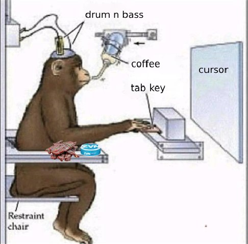

Vibe coding это новая ужасная/потрясающая тенденция в разработке.
По сути люди без опыта в разработке собирают при помощи ИИ помощников полноценные коммерческие приложения и продают их пользователям за реальные деньги.
Один выходной день я тоже решил посвятить себя вайб-кодингу. Попытаться отключить мозг и отдаться течению. Пусть умная машина думает за меня. Но чтобы совсем не раскиснуть, будем пытаться делать TDD подход (тоже ИИшкой конечно), чтобы иметь какую-то гарантию что время не тратятся впустую.
Мой сетап:
- Editor: Cursor
- Язык: Python
- Модель: Claude 3.5 Sonnet / Claude 3.7 (Thinking)
Результаты
После нескольких часов “на вайбе”, определённо оценил как быстро можно создать “много кода”. Много кода это совсем не равно продуктивности, но тем не менее, сильно экономит время на первый рывок.
У меня есть значительная проблема с синдромом “чистого листа”. Даже если создан первичный дизайн-документ, приступить к началу не просто, и когда ИИ просто выплёвывает сразу класс с методами, стартовать намного легче. Всегда проще исправить месиво, чем сделать хорошо сразу, потому что второе подразумевает быть и “творцом” и “критиком” одновременно, а разделение этих ролей делает работу на порядок приятнее.
Я до сих пор не с ходу не смогу сказать, как “замокать” следующий код для тестов:
with psycopg2.connect(**self.config) as conn:
with conn.cursor() as cursor:
cursor.execute(query)
В этом смысле Cursor здорово экономит мне ментальные ресурсы на то, чтобы
не копаться, что называется, в мелочах, а думать о программе на более высоком уровне её работы. Но вот вопрос, если машина берёт на себя этот самый приземленный уровень работы, но не делает это в долгосрочной перспективе, программиста тупее? Ну или хотя бы ленивее?
Программисты часто говорят, что лень - это хорошо, что не стоит делать лишнюю работу, если её можно избежать (обычно в контексте автоматизации рутинных задач). Перейти в браузер, загуглить документацию, найти нужный пример, всё равно запустить этот пример в repl’е. Все это держит в тонусе, развивает навык поиска и извлечения информации.
Минусы:
Машина продолжает галлюцинировать время от времени.
Ещё, если машина хочет чтобы поле prefix в классе было атрибутом метода,
а не полем класса, то переубедить её на месте можно, но ненадолго.
В какой-то момент она всё же умудряется подсунуть именнно свой вариант, который
мы терпеливо ловим в тесте и вежливо просим передумать ещё раз.
По крайней мере для Python машину не особо волнуют все эти абстрактные
классы и протоколы, которые я тут пытаюсь соблюдать, и она также их нарушит
если время от времени не напоминать ей об этом. Но тут думаю проблема может
быть в самом языке, который не очень строго относится к типам данных, допуская
в рантайме всё что не запрещено.
Выводы:
Я думаю, что существует некоторая точка в использовании Cursor когда
когда мы именно что:
- экономим время на рутину
- прорабатываем больше идей и быстрее
- отлавливаем собственные ошибки
В целом мне удалось за несколько часов написать почти готовый и даже протестированный скрипт, что наверное процентов на 40-50% быстрее, чем если бы я писал этот код сам (вычтем время на самокопания и борьбу с синдромом самозванца). Довольно неплохо.
Но увы, человечекий мозг любит лёгкие пути и быстро привыкает к комфорту.
А потеря концентрации в эфории нажатия Tab приводит к не очень то
оптимальному коду. Нет, я не проникся вайб-кодингом вообще, и скорее
продолжу использовать Cursor для “разговоров с уточкой” и быстрых
набросков. Если кто-то может продуктивно зарабатывать деньги на этом,
то я рад за них, но это не наш путь.
